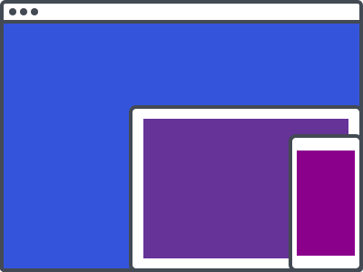

Responsive
Developed for mobile first responsive web design with an intuitive grid system and responsive utilities.
Turret is a styles and browser behaviour normalisation framework for rapid development of responsive and accessible websites.
Get startedDeveloped for mobile first responsive web design with an intuitive grid system and responsive utilities.
Focused on a customisable base of typography, font definitions, color and indicators palettes for simple and stylish web user interfaces.
Style native web elements. That's it, no javascript, no custom markup, just semantic HTML5 elements.
Semantic HTML5 markup that is modular, maintainable, and responsive without the headache.